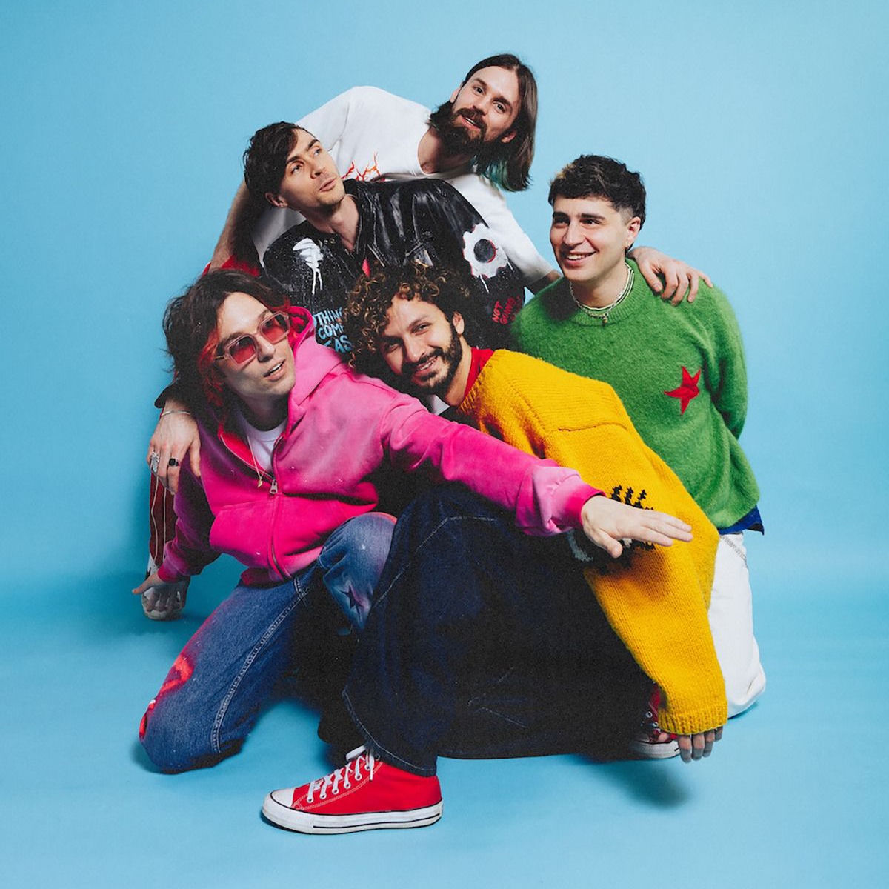
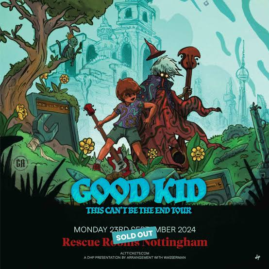

Good Kid é uma banda de indie rock de Toronto, Ontário. Formada por o vocalista Nick Frosst, o baterista Jon Kereliuk, o baixista Michael Kozakov e os guitarristas David Wood e Jacob Tsafatinos.

Características
O som deles Indie rock acelerado e extremamente melódico, misturado com J-rock, pop-punk e indie pop, com guitarras saltitantes e bateria energética. Suas musicas normalmente abordam temas de animes e corações partido, com uma estetica que lembram filmes adolescentes e videogames.
O mascote deles possui o nome de “nomu kid” e apareceu na capa da primeira musica deles.
Curiosidades
- Os integrantes da banda estadaram Ciência da Computação
- O grupo se conheceu na universidade de toronto, e já brincaram com o fato se chamando de “five computer boys that make music”
- Ficaram conhecidos pelo Fortnite
- A banda começou como um hobbie, mas com o tempo a Epic encontrou em contato com eles, e a primeira musica a entrar no Spotify foi “Witches”
- Eles possuem um jogo
- O vocalista da banda, Nick Frost, criou o jogo “Ghost King’s Revenge”. Ele pode ser jogado pelo navegador e possui os personagens da banda.
